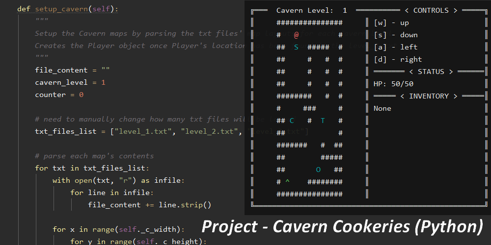
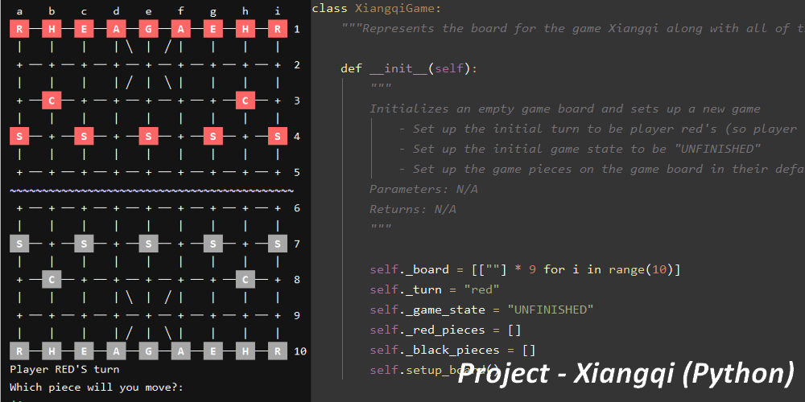

About
Portfolio
Contact
Hi! I'm Judy
CS Student at Oregon State University
Hopeful Future Software Developer/Engineer
Avid Video Game Enthusiast & MMORPG Raider

Cavern Cookeries

Xiangqi Game
Community Request Board
❮
❯
All images are owned by Jung Min (Judy) Lee and from my Github page